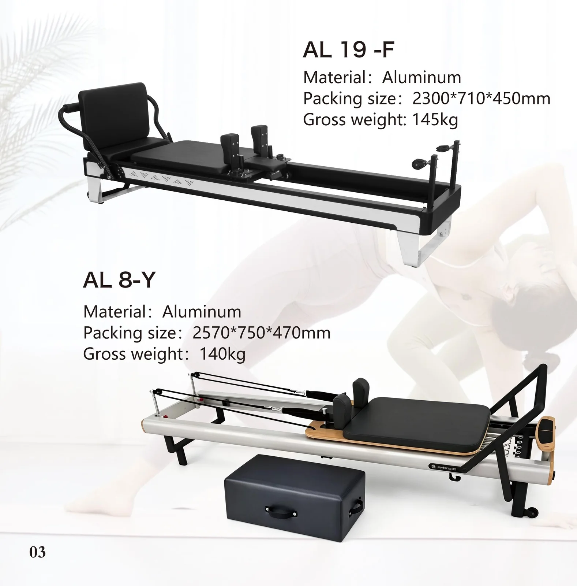
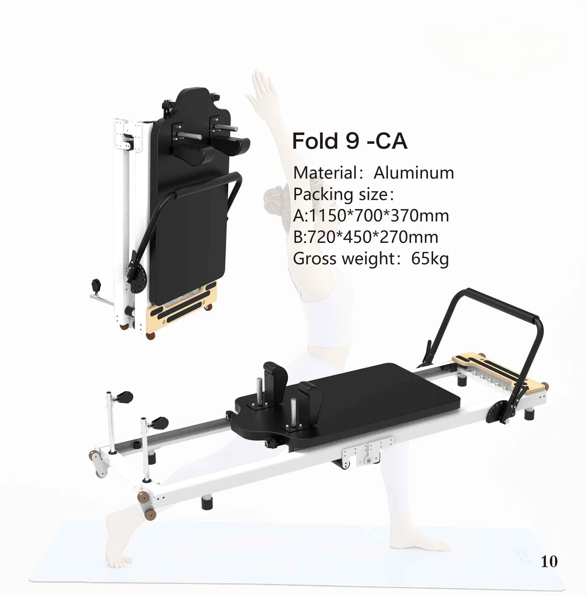
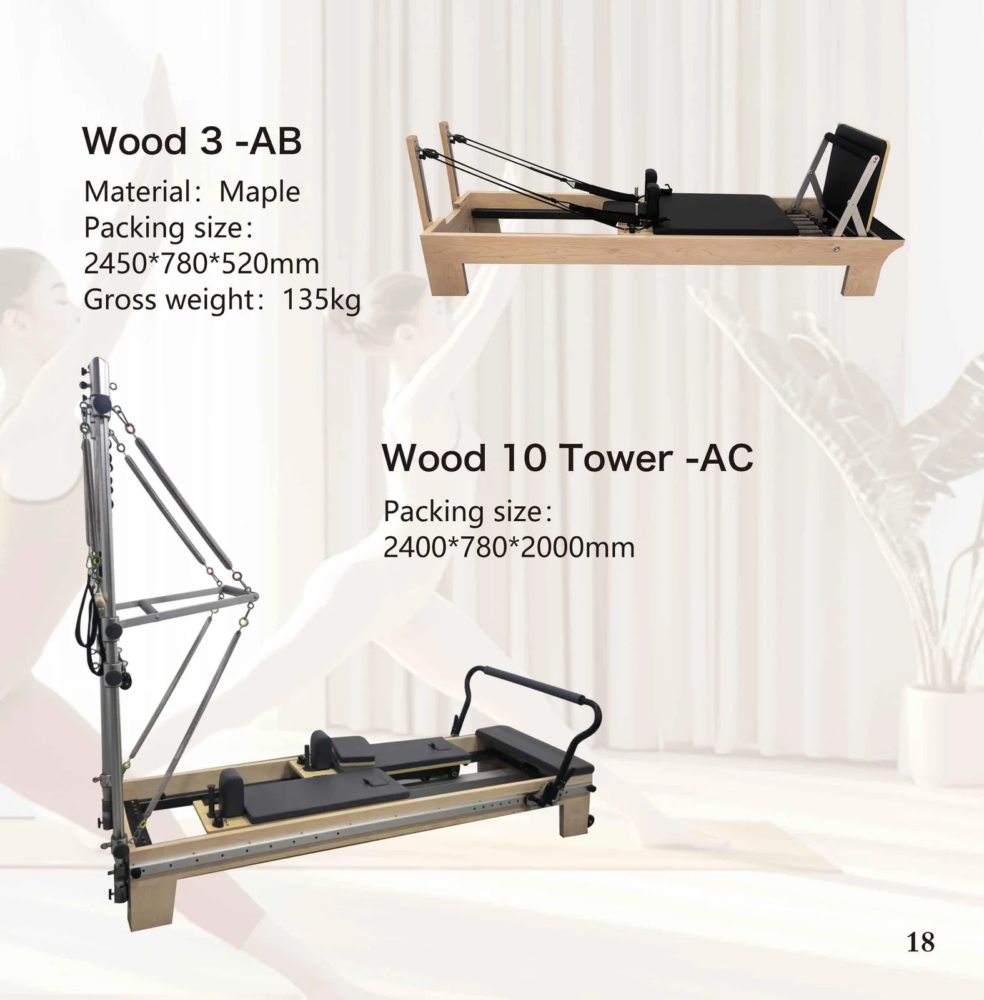
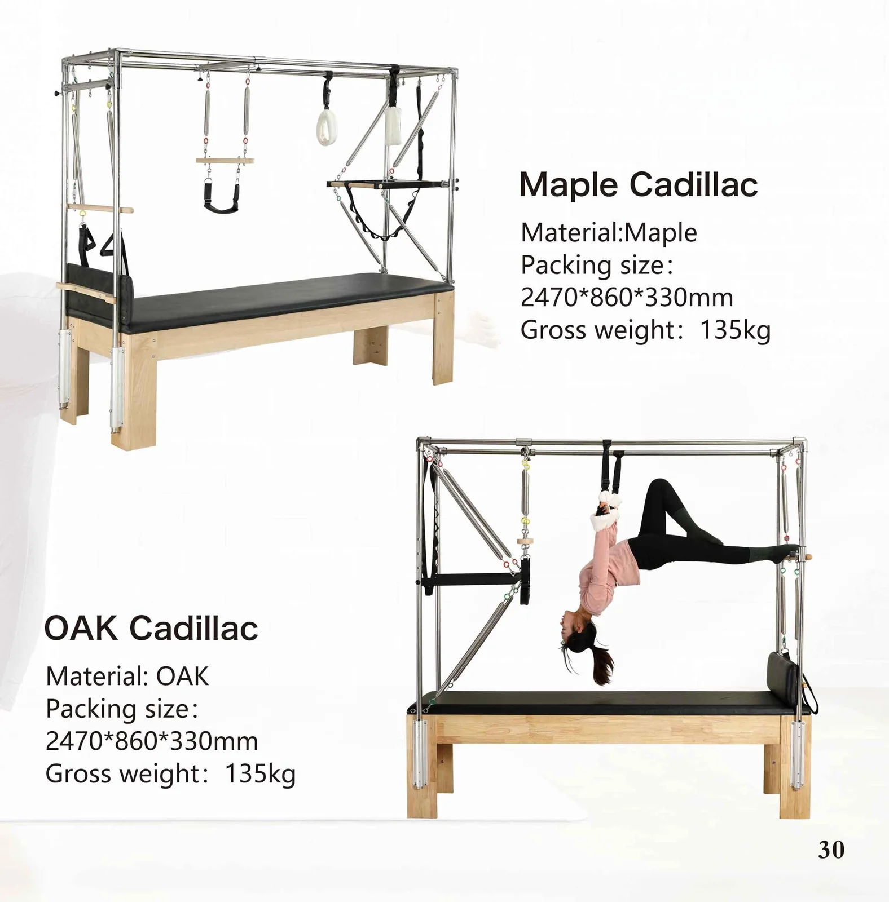
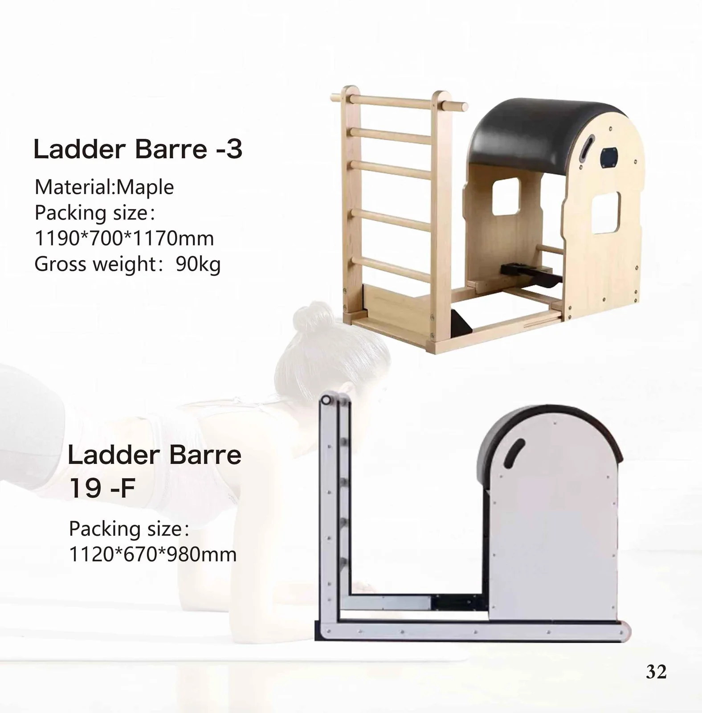
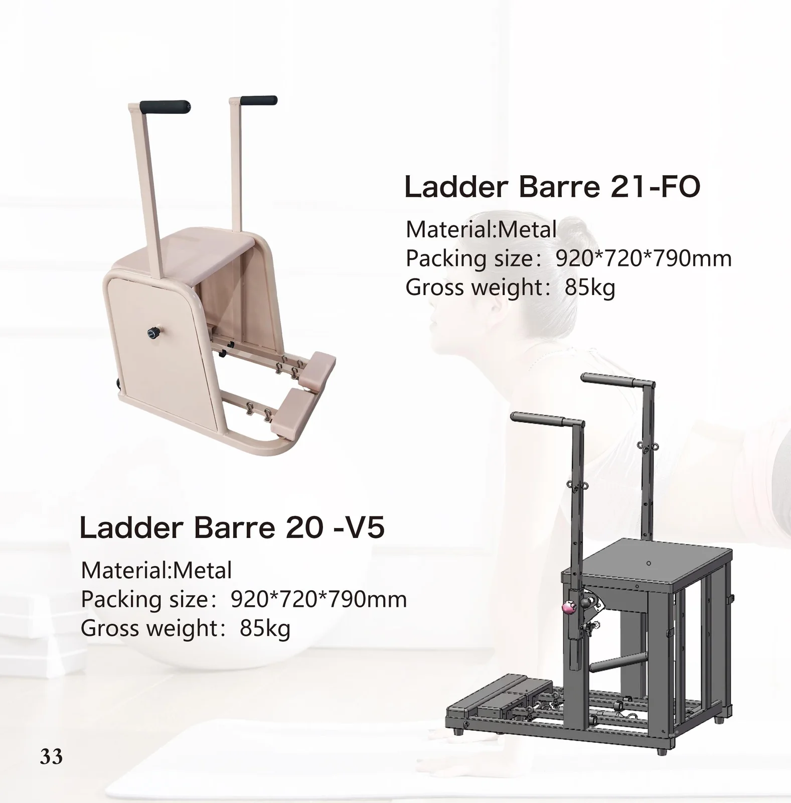
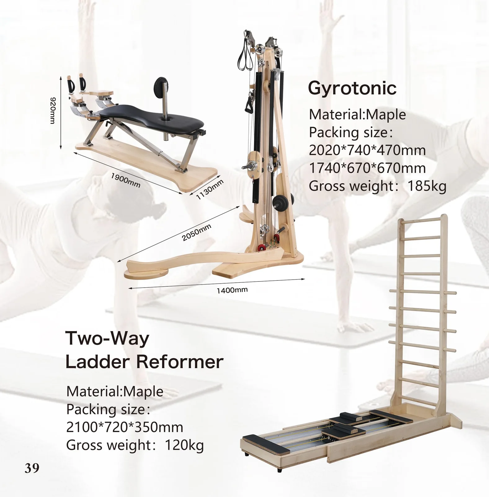
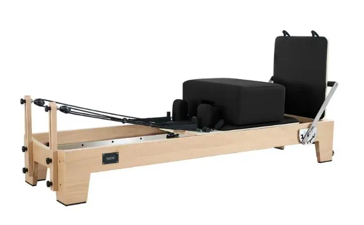

Seven series, 69 machines in the 2026 catalogue — reformer, Cadillac, ladder barrel, chair and the specialty pieces, in solid timber, aluminium and steel. Spine correctors and studio sets we build to your drawing. Same factory as our yoga mat line, different bench.
Every machine on this site is a page in our 2026 catalogue. Open a series to see the catalogue page itself, with the same specification written out as text underneath.

Machined aluminium frame, stainless-steel rails — the workhorse for volume orders and studio fit-outs.

Folds flat for storage and apartment delivery; the line home studios and DTC sellers ask for first.

Maple and oak frames with traditional joinery, for studios that want the timber look.

Full trapeze table with tower, mat and spring set — the widest exercise vocabulary of any apparatus.

Solid-wood arc with an adjustable ladder rung, for spinal extension, stretching and side-bending.

Pedal-and-spring chairs in maple, oak and metal; small footprint, high repeat-order rate.

Wall-mounted and two-way units for studios that need the function without the floor space.

FUJIAN SANFAN has been making yoga and fitness products for over a decade. The apparatus line grew out of the same timber and upholstery supply chain — so a studio order and a mat order can be consolidated, and one QC team signs off both.
Specification, layout, delivery access, fleet planning and the buying order — written for studios, distributors, gyms and hotels buying equipment, not for end users browsing a shop.
Frame lines compared, how to read a packing list, and the five decisions to lock before a deposit.
Reformer, tower, Cadillac, chair, barrel, corrector — and a buying order that works.
A staged build-up order — floor equipment, towers, chairs, barrels and props.
The spec sheet fields, sample gates and documents that keep a program on schedule.
Door, corridor and lift clearances from the published crate dimensions.
Fleet standardisation, cleaning regimes, delivery routes and the spares to stock.
Seven apparatus types side by side: what each one is for, the packed size published on its spec page, and the studio it suits. Open a spec page for every model's packed size and gross weight.
| Apparatus | What it is for | Published packed size (example) | Best suited to | Spec page |
|---|---|---|---|---|
| Pilates Reformer | The machine a studio is built around: carriage, springs and footbar for the core classical repertoire. Aluminium, foldable and solid-timber lines. | e.g. AL 10-CLASSIC 2300 × 710 × 450 mm; folding Fold 9-CA 1150 × 700 × 370 mm | Every studio; foldable line for home studios, DTC sellers and space-constrained rooms | View Reformer → |
| Pilates Cadillac | Trapeze table with tower, ten tower springs, push-through bar and trapeze — the widest exercise vocabulary of any apparatus. | e.g. Maple Cadillac 2470 × 860 × 330 mm | Studios running advanced classes and one-to-one sessions | View Cadillac → |
| Pilates Wunda Chair | Compact vertical spring column with a hinged, multi-position pedal. | e.g. Chair 1-A 920 × 720 × 790 mm; in use, roughly a dining chair plus pedal clearance | One-to-one sessions and small studios; fits into a corner | View Wunda Chair → |
| Pilates Ladder Barrel | Arc with an adjustable ladder rung for spinal extension, stretching and side-bending work. | e.g. Ladder Barre 1-A 1190 × 700 × 1170 mm | Timber studios (maple, oak) or wipe-down rooms (all-metal build) | View Ladder Barrel → |
| Pilates Spine Corrector | Small barrel with a step for spinal mobilisation, thoracic extension and shoulder work. Built to your drawing. | See spec page | Group classes — light enough to move between the mat area and the equipment floor | View Spine Corrector → |
| Reformer Tower & 3-in-1 | A half tower bolts onto a reformer to add tower springs and a push-through bar; the 3-in-1 combines reformer, half tower and full tower in one frame. | e.g. AL1-B01 Tower 2400 × 830 × 2000 mm; AL 6-H 3in 1 2530 × 800 × 500 mm | Small studios that want tower work without a separate Cadillac | View Reformer Tower & 3-in-1 → |
| Pilates Studio Set | Reformer, ladder barrel, Wunda chair, spine corrector and Cadillac in one matched order — same timber, leather and hardware finish. | See spec page | New studios and showrooms equipping a whole floor on one order, in one container | View Studio Set → |
Sizes are packed (crate or carton) dimensions from the 2026 catalogue, not the assembled floor footprint — use them to check doors, corridors and lifts. Spine correctors and studio sets are built to your drawing or floor plan, so sizes are set per order.